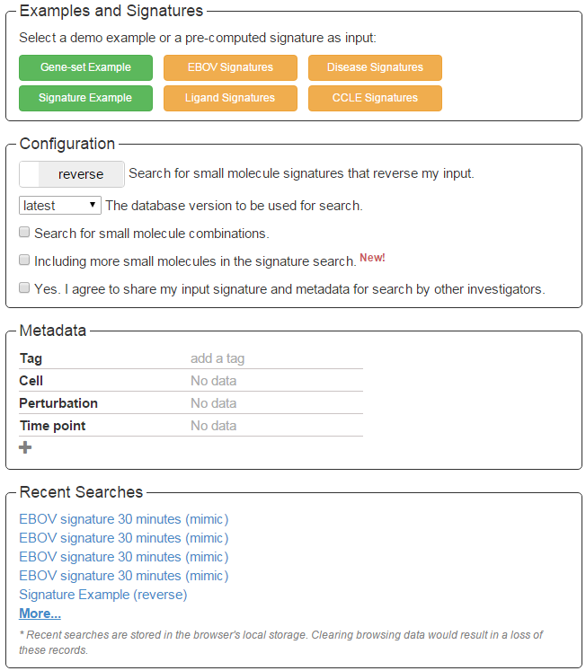
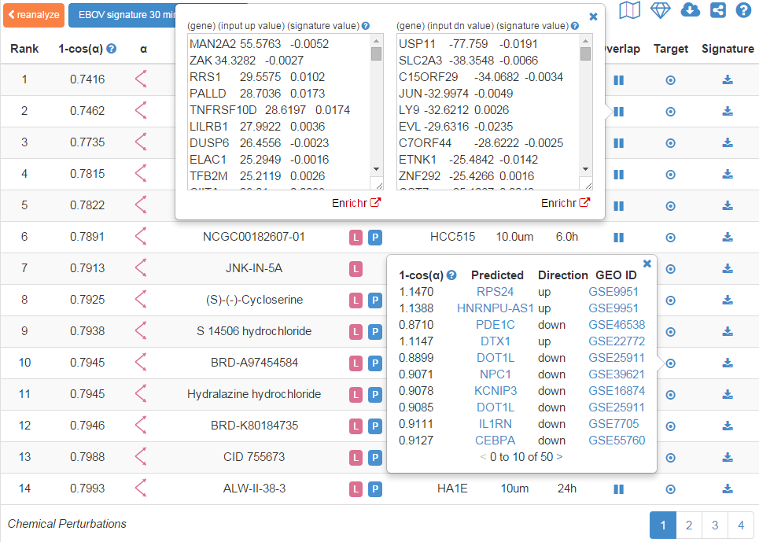

L1000CDS²
L1000CDS²
An ultra-fast LINCS L1000 Characteristic Direction Signature Search Engine
Summary
L1000CDS² is a LINCS L1000 characteristic direction signature search engine to find consensus signatures that match users’ up and down input gene lists or input signature vectors. The underlying dataset is part of the LINCS L1000 small molecule expression profiles generated at the Broad Institute by the Connectivity Map team. The differentially expressed (DE) genes of these profiles were calculated using the characteristic direction method. Depending on the user’s input, L1000CDS² uses either a gene-set method or cosine distance method to run the search. When up/down gene lists are submitted to L1000CDS², the search engine compares the input gene lists to the DE genes computed from the LINCS L1000 data and descriptive information of the top 50 matched signatures is returned. When a signature is submitted to L1000CDS² in the format of "gene symbol, expression value", the search engine calculates a cosine distance between the input signature and every characteristic direction signature in the database, and the top 50 signatures of either the largest (reverse mode) or the smallest (mimic mode) cosine distances are returned. L1000CDS² leverages the efficiency of matrix operations to perform the search and finishes a query against more than 20,000 signatures in less than a decisecond using the gene-set method or less than 4 seconds using the cosine distance method. The app is developed by the Ma'ayan Laboratory at the Icahn School of Medicine at Mount Sinai for the BD2K-LINCS-DCIC and the KMC-IDG NIH funded projects.
L1000 mRNA Expression Data
The L1000 mRNA gene-expression dataset is generated as part of the Library of Integrated Network-based Cellular Signatures (LINCS) project, a Common Fund program run by NIH. LINCS aims to systematically profile the molecular and phenotypical outcomes of agent perturbed human cells. The variety of agents includes chemical compounds, different micro-environments, endogenous ligands, gene knockdown and overexpression. The L1000 dataset comprises of over a million gene expression profiles of chemically or genetically perturbed human cell-lines. The L1000 technology developed at Broad Institute measures only ~1000 genes in each sample and estimates the expression of the rest of the transcriptome using an empirical model. In this way, the technology significantly reduces the cost and makes large-scale gene expression profiling possible. L1000CDS² currently includes a subset of the chemically perturbed gene expression profiles, specifically the profiles in the CPC and CPD peturbagen groups. After averaging replicates and removing insignificant signatures, we remained with 22,926 signatures in the L1000CDS² database.
Tutorial
Input
Search
The entry point into L1000CDS² is to paste up/down gene lists into the up/down gene text boxes (Fig. 1) or paste a signature (Fig. 2) into the up gene text box. A signature is a list of genes and their differential expression values separated by a comma. The search button will only become enabled when both up/down genes text boxes are filled by gene lists, or when the up gene textbox is filled with a signature. Clicking the Search button, and the information for the top 50 signatures will be displayed in a table in a new page.

Fig. 1 Screenshot of the input text boxes filled with up/down gene lists.

Fig. 2 Screenshot of the input up gene text box filled with a signature.
Examples and Signatures
Clicking the Gene-set Example button will fill in an example of up/down gene lists in the text boxes for a demo search using the gene-set method. Clicking the Signature Example button will fill in an example of a signature in the up gene text box for a demo of searching with the cosine distance method (Fig. 3).
Fig. 3 Screenshot of the four input form functional sections on the right: Examples and Signatures, Configuration, Metadata and Recent Searches
Clicking the EBOV Signatures button will open a table withof three EBOV signatures at three time points (Fig. 4). Selecting a signature by a single click and clicking the Search button can be used toto perform a cosine distance search. The selected signature will be automatically filled in the up gene text box and the associated metadata will be filled in the metadata section.

Fig. 4 Screenshot of the EBOV signature table
Clicking on the Diseases Signatures button will open a table of disease names and their tissue types including the GEO ID referingreferring to the original study for the disease signature (Fig. 5). The table is searchable by disease name or tissue type and can be sorted by either column. Each row represents a differential expression signature of a disease and consists of the diferentiallydifferentially expressed genes and their expression values in the disease compared with the relevant normal tissue. These signatures were calculated from gene expression data deposited in GEO. Clicking on a row will select that disease. Clicking on the search button will fill in the signature of the selected disease in the up gene text boxes and the associated metadata in the metadata section and perform a search for small molecules at the same time.

Fig. 5 Screenshot of the disease table
Configuration
Clicking the mimic/reverse slider can be used to switch between reverse and mimic modes (Fig. 3). In the mimic mode for the gene-set search, the input up genes are intersected with the up genes of the gene expression profiles in the L1000CDS² database, and the input down genes are intersected with the down genes for each entry in the database. In the reverse mode for the gene-set search, the input up- genes are intersected with the down- genes, and the input down- genes are intersected with the up- genes. When a cosine distance search is performed, the top 50 signatures will be those of the smallest cosine distances from the input signature in the mimic mode, or those with the largest cosine distances in the reverse mode. The default mode is reverse.
Users can share their input signatures and metadata so other users can query the signatures and gene sets they submitted. To make submitted input gene sets and signatures “public” for research purposes, a checkbox is available (Fig. 3). The default is set to “No” such that users’ input is made private. Users can still share their input lists, signatures, metadata and results using the share icon on the result page (Fig. 6). Clicking on the share icon produced a permenant URL that can be shared through e-mail, publications and other documentation.
Metadata
Any metadata associated with the input signature can be entered in the metadata section. By default, the section provides four input fields for metadata: Tag, Cell, Perturbation and Time Point (Fig. 3). Users can add new input fields for additional types of metadata by clicking the plus sign at the bottom or remove one by clicking the minus sign on the right of each row. The minus sign will only appear when the mouse cursor is hovering over a row. The tag field is used to enter few words which are most descriptive of the input signature.
Recent Researches
Recent search history will be displayed in this section as links (Fig. 3). Clicking a link will show the results for that search. Recent searches are stored in the browser's local storage buffer. Clearing browsing data would result in a loss of these records. A maximum of 50 recent searches are stored for each user’s browser.
Result
Table
The search results are rendered as a paginated table with 12 entries per page (Fig 6). Each entry provides five pieces of information about the signature: score, perturbation, cell-line, dose, and time point. The score is the overlap between the input DE genes and the signature DE genes divided by the effective input. The effective input is the length of the intersection between the input genes and the L1000 genes since some input lists contain genes that are not present in the L1000 dataset. This includes all ~22,000 L1000 genes, not just the measured ~1000. For the cosine distance search, the score is the cosine distance between the input signature and the L1000 characteristic direction signatures. The consensus signatures are sorted by their scores in descending order in reverse mode and in ascending order in mimic mode. The perturbation column shows the names of the chemical perturbations. User can click on the three L P D icons to look up perturbations in LIFE, PubChem and DrugBank that catalog detailed information about the chemical compound. Not every perturbation is available in all the three resources. There is also a signature column in the table. Clicking the download button in that column will download all the information about a signature as a JavaScript Object Notation (JSON) file.

Fig. 6 Screenshot of the paginated results table, the header and the share button.
Another column in the table is the overlap column. Clicking the overlap button will show the overlapping genes (and their values) in two text boxes. If the user input type is up/down gene lists, the first box will show the overlap genes between the input up genes and the signature up (down) genes and the second will show the overlap between the input down and the signature down (up) in mimic (reverse) mode. If the input is a signature, the first box will show genes with a positive value in input and their values in the signature; the second box will show genes with a negative value in input and their values in the signature. The signature values and input values in both boxes are expected to be mostly in the same sign in mimic mode and in the opposite sign in reverse mode. The Enrichr button under each text box will send the genes to Enrichr for enrichment analysis.
Fig.7 Screenshot of the overlap between the input signature and a small molecule signature.
Header
A header that displays the tag and search mode is shown on the upper left corner of the result page (Fig. 7). Clicking the header will show the metadata of the input.API
[POST] http://amp.pharm.mssm.edu/L1000CDS2/query
Gene-set Search
| data | Object | An object that saves the input up/down gene lists. |
| data.upGenes | [String] | An array of up-regulated genes. |
| data.dnGenes | [String] | An array of down-regulated genes. |
| config | Object | An object that saves the search configuration. |
| config.aggravate | Object | True to perform the search in aggravate mode and False in reverse mode. |
| config.seachMethod | String | “geneSet” |
| config.share | Boolean | True to agree to share input data and metadata. |
| metadata | [Object] | An array of objects that saves the metadata of the input. |
| metadata[ ].key | String | A metadata field. |
| metadata[ ].value | String | A metadata value. |
| shareId | String | Unique ID for sharing the search results |
| topMeta | [Object] | Descriptive information of the top 50 consensus signatures |
| topMeta[ ].score | Double | Score |
| topMeta[ ].cell_id | String | Cell-line |
| topMeta[ ].pert_desc | String | Perturbation name |
| topMeta[ ].pert_id | String | Unique identifier for a perturbation |
| topMeta[ ].pubchem_id | String | PubChem ID of the perturbation if exsiting |
| topMeta[ ].drugchem_id | String | DrugBank ID of the perturbation if existing |
| topMeta[ ].pert_time | String | Time point |
| topMeta[ ].pert_time_unit | String | Time point unit |
| topMeta[ ].pert_dose | String | Dose |
| topMeta[ ].pert_dose_unit | String | Dose unit |
| topMeta[ ].sig_id | String | Unique identifier for a signature |
| topMeta[ ].overlap | Object | The overlapping genes between input genes and signature DE genes. |
| topMeta[ ].overlap.up/dn (reverse mode only) | [String] | The overlap between input up genes and signature down genes. |
| topMeta[ ].overlap.dn/up (reverse mode only) | [String] | The overlap between input down genes and signature up genes. |
| topMeta[ ].overlap.up/up (mimic mode only) | [String] | The overlap between input up genes and signature up genes. |
| topMeta[ ].overlap.dn/dn (mimic mode only) | [String] | The overlap between input down genes and signature down genes. |
Cosine Distance Search
| data | Object | An object that saves the input signature. |
| data.genes | [String] | An array of input genes. |
| data.vals | [Number] | An array of input values that match to each input gene. |
| config | Object | An object that saves the search configuration. |
| config.aggravate | Object | True to perform the search in aggravate mode and False in reverse mode. |
| config.seachMethod | String | "CD" |
| config.share | Boolean | True to agree to share input data and metadata. |
| metadata | [Object] | An array of objects that saves the metadata of the input. |
| metadata[ ].key | String | A metadata field. |
| metadata[ ].value | String | A metadata value. |
| shareId | String | Unique ID for sharing the search results |
| uniqInput | Object | An object that stores unique input genes overlapped with L1000 genome and their averaged input values. |
| uniqInput.up | Object | An object that stores Unique input up genes and their averaged input values. |
| uniqInput.up.genes | [String] | Unique input up genes. |
| uniqInput.up.vals | [Number] | Values of unique input up genes. |
| uniqInput.dn | Object | An object that stores Unique input down genes and their averaged input values. |
| uniqInput.dn.genes | Object | Unique input down genes. |
| uniqInput.dn.vals | Object | Values of unique input down genes. |
| topMeta | [Object] | Descriptive information of the top 50 consensus signatures |
| topMeta[ ].score | Double | Score |
| topMeta[ ].cell_id | String | Cell-line |
| topMeta[ ].pert_desc | String | Perturbation name |
| topMeta[ ].pert_id | String | Unique identifier for a perturbation |
| topMeta[ ].pubchem_id | String | PubChem ID of the perturbation if exsiting |
| topMeta[ ].drugchem_id | String | DrugBank ID of the perturbation if existing |
| topMeta[ ].pert_time | String | Time point |
| topMeta[ ].pert_time_unit | String | Time point unit |
| topMeta[ ].pert_dose | String | Dose |
| topMeta[ ].pert_dose_unit | String | Dose unit |
| topMeta[ ].sig_id | String | Unique identifier for a signature |
| topMeta[ ].overlap | Object | A object that stores the signature values of unique input genes overlapped with L1000 genome. |
| topMeta[ ].overlap.up | [Number] | The signature values of unique input up genes. |
| topMeta[ ].overlap.dn | [Number] | The signature values of unique input down genes. |
import requests
import json
url = 'http://amp.pharm.mssm.edu/L1000CDS2/query'
# gene-set search example
data = {"upGenes":["KDM5A","EGR1","RELB"],
"dnGenes":["USP22","PHGDH","HADH"]}
config = {"aggravate":True,"searchMethod":"geneSet","share":True}
metadata = [{"key":"Tag","value":"gene-set python example"},{"key":"Cell","value":"MCF7"}]
payload = {"data":data,"config":config,"metadata":metadata}
headers = {'content-type':'application/json'}
r = requests.post(url,data=json.dumps(payload),headers=headers)
resGeneSet = r.json()
# cosine distance search example
data = {"genes":["DDIT4","HIG2","FLT1","ADM","SLC2A3","ZNF331"],"vals":[9.97,10.16,7.66,17.80,20.29,15.22]}
config = {"aggravate":False,"searchMethod":"CD","share":True}
metadata = [{"key":"Tag","value":"CD python example"},{"key":"Cell","value":"VCAP"}]
payload = {"data":data,"config":config,"metadata":metadata}
headers = {'content-type':'application/json'}
r = requests.post(url,data=json.dumps(payload),headers=headers)
resCD= r.json()
Contact
Please contact Avi Ma’ayan and Qiaonan Duan for comments, suggestions, and support: avi.maayan@mssm.edu, qiaonan.duan@mssm.edu.